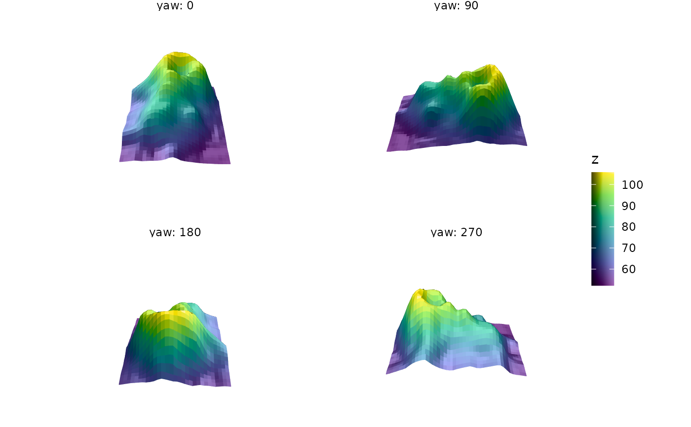
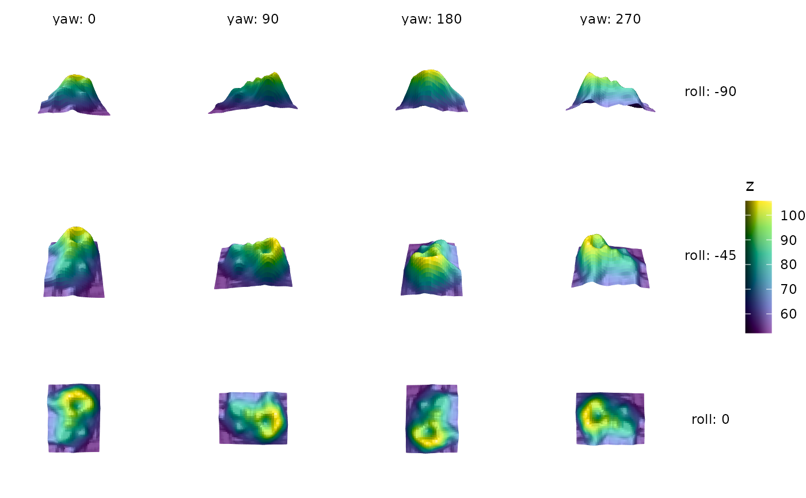
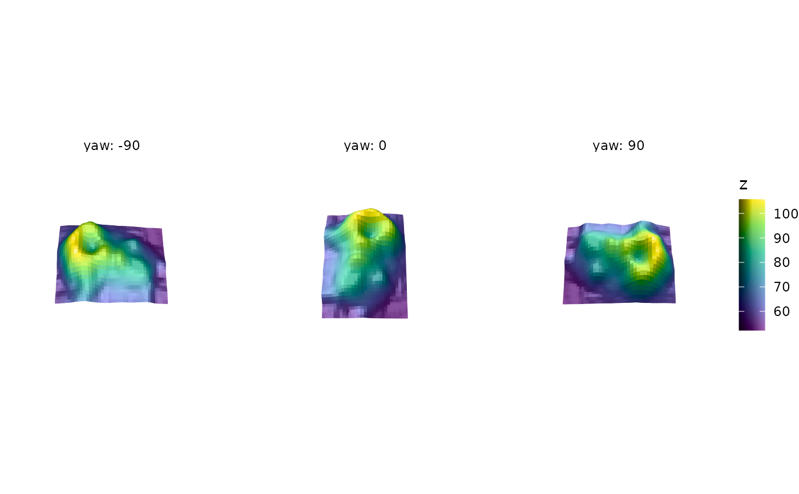
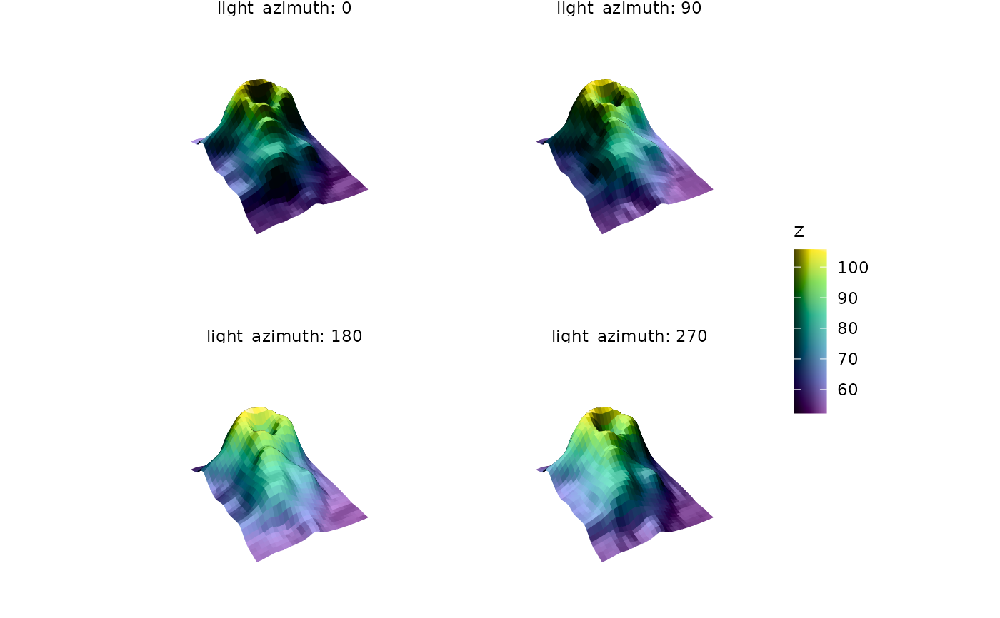

These facets show a plot from several angles at once, with one panel per
view. Where ggplot2::facet_wrap() and ggplot2::facet_grid() split the
data by the values of data variables, facet_wrap_views() and
facet_grid_views() give every panel all of the data and vary the angle it
is seen from instead: the camera angles pitch, roll, and yaw, and the
light angles light_azimuth and light_elevation. facet_wrap_views()
wraps a sequence of views into rows, and facet_grid_views() lays views
out with one set of angles down the rows and another across the columns.
Usage
facet_wrap_views(
facets,
pitch = NULL,
roll = NULL,
yaw = NULL,
light_azimuth = NULL,
light_elevation = NULL,
n = 4,
nrow = NULL,
ncol = NULL,
dir = "h",
strip.position = "top",
labeller = "label_both"
)
facet_grid_views(
rows,
pitch = NULL,
roll = NULL,
yaw = NULL,
light_azimuth = NULL,
light_elevation = NULL,
n = 4,
switch = NULL,
labeller = "label_both"
)Arguments
- facets
For
facet_wrap_views(), a one-sided formula naming the angles to vary, such as~yawor~yaw + roll. A character vector of angle names also works.- pitch, roll, yaw, light_azimuth, light_elevation
Angles in degrees. For an angle named in the formula, an optional length-2 range
c(from, to)to sample it over (see Details for the defaults). For any other angle, an optional single value to fix it at in every panel.- n
Number of values to sample each angle in the formula at. A single number applies to every angle; otherwise give one number per angle, in the order the angles appear in the formula. Default is 4.
- nrow, ncol
Number of rows and columns.
- dir, strip.position, labeller
Passed to
ggplot2::facet_wrap()orggplot2::facet_grid(). The default labeller shows each angle's name and value, such as "yaw: 90"; uselabeller = "label_value"to show the value alone.- rows
For
facet_grid_views(), a formula with the angles to vary down the rows on the left and across the columns on the right, such asroll ~ yaw. Use.for an empty side, as in. ~ yaw.- switch
Passed to
ggplot2::facet_grid(), to move strips to the opposite sides of the panels.
Choosing views
The formula names the angles that vary from panel to panel, in the same way
a facet_wrap() or facet_grid() formula names data variables:
facet_wrap_views(~yaw) shows views around the vertical axis, and
facet_grid_views(roll ~ yaw) varies roll down the rows and yaw across
the columns. A side of a grid formula can be left empty with ., as in
. ~ yaw, and several angles can be combined with +, as in
roll ~ yaw + light_azimuth, which crosses them.
Each angle named in the formula is sampled at n evenly spaced values
across a range. The range can be set with the argument of the same name,
such as yaw = c(-90, 90); otherwise a default range is used:
yawandlight_azimuth: a full turn,c(0, 360).roll:c(-90, 0), from a side view to looking straight down.pitch:c(-45, 45).light_elevation:c(0, 90), from the horizon to overhead.
A range that returns to its starting view, such as a full turn, drops its
duplicate endpoint, so four views of yaw = c(0, 360) are at 0, 90, 180,
and 270 degrees.
Angles not named in the formula can be fixed for every panel with a single
value, such as roll = -20; otherwise they are held at the values set in
coord_3d() and the plot's light(). Angles use the same conventions as
coord_3d() and direction().
Lighting
Light angles move the plot-level light, set with light() or
coord_3d(light = ), which must be directional (not position-based). It is
an error to use them when lighting is disabled or when any layer sets its own
light. The light's anchor is respected: with the default
anchor = "scene" the light moves around the data, and with
anchor = "camera" it moves around the viewer.
Layout
Every panel is framed identically, so the plot keeps its size from panel to
panel and differences between panels come only from the view. To leave room
for each panel's axis labels, these facets set a wider default
panel.spacing in the plot's theme, which a later
theme(panel.spacing = ) overrides.
These facets can't be combined with faceting by data variables, since a
plot has only one facet. When animating a plot that uses them with
animate_3d() or orbit_3d(), only angles the facet doesn't set can be
moved.
See also
orbit_3d() for an interactive view you drag between angles, and
animate_3d() for animations.
Examples
p <- ggplot(mountain, aes(x, y, z, fill = z)) +
geom_surface_3d(linewidth = .25) +
coord_3d(ratio = c(1.5, 2, 1)) +
scale_fill_viridis_c() +
theme_void()
# \donttest{
# Four views around the vertical axis
p + facet_wrap_views(~yaw)

# Yaw across the columns and roll down the rows
p + facet_grid_views(roll ~ yaw, n = c(3, 4))

# Set the range of an angle, and fix another for every panel
p + facet_wrap_views(~yaw, yaw = c(-90, 90), n = 3, roll = -20)

# Compare light angles from a fixed view
p + light("hard") + facet_wrap_views(~light_azimuth)

# }